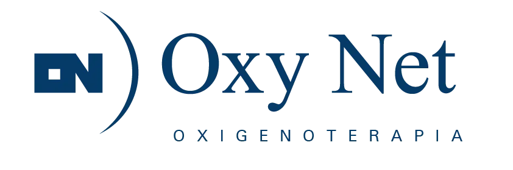

Colocaciones septiembre
568
26 menos que en agosto.
−4,4% mensual
Lectura ejecutiva del flujo de equipos, las cuentas que explican el mes y las señales comerciales y operativas que requieren seguimiento.
Después del salto de agosto, bajan las colocaciones y vuelven a subir los retiros. El mes cierra en −13 equipos; el acumulado anual se mantiene positivo en +89.
El deterioro viene de ambos lados. Hay 26 colocaciones menos y 112 retiros más que en agosto.
Q3 sigue siendo favorable. Julio, agosto y septiembre acumulan +125; el trimestre conserva la mitad de la mejora de Q2.
No es una caída generalizada. Tratamiento del sueño crece con fuerza; oxígeno, transporte y aspiración absorben ese avance.
CPAP, AutoCPAP y humidificadores vuelven a ser el motor estratégico. Sin ese bloque, el saldo mensual habría sido marcadamente negativo.
Oxigenador adulto (−48), concentrador de oxígeno (−29), transporte (−14) y aspirador eléctrico (−10) explican la mayor parte del retroceso.
Los diez mayores crecimientos suman +182 y las diez principales bajas −142. El resto de la cartera aporta −53 y lleva el total a −13.
Nuevo máximo mensual: 144 colocaciones y 38 retiros. El avance se concentra en humidificadores (+52), CPAP (+37) y AutoCPAP (+17).
Revierte el +33 de agosto. Concentrador de oxígeno (−12), oxigenador adulto (−8) y transporte (−4) explican la baja.
| Cuenta | Cliente | Sep. | Lectura anual / mensual |
|---|
| Cuenta | Cliente | Sep. | Lectura anual / mensual |
|---|
Los cinco mayores clientes reúnen 5.170 equipos instalados. Ocho cuentas continúan representando aproximadamente la mitad del parque.
C7764 · OSDE Proveedor. Es la mayor cuenta y vuelve a caer tras la recuperación de agosto.
C0829 · PAMI. La baja profundiza el acumulado anual negativo, relevante por su volumen instalado.
C7726 · OBSBA. Septiembre reduce parte de la expansión acumulada, aunque el año conserva signo positivo (+44).
La tabla detallada pasa de 1.735 a 2.236 unidades: +501 (+28,9%). El crecimiento se concentra en un producto y en pocas cuentas, por lo que no debe leerse como una expansión homogénea de la demanda.
Estas cuatro cuentas explican +410 unidades, 81,8% del aumento. En sentido contrario, C0031 resta 75, C7726 resta 35, C0833 resta 22 y C0829 resta 17.
La creación de kits de accesorios no tuvo impacto: no se vendió ningún kit diseñado y tampoco aumentó la demanda de sus componentes por esa iniciativa. La cuenta sube de 44 a 70 entregas, pero ese movimiento no debe atribuirse a los kits.
Septiembre incorpora por primera vez ventas de máscaras de CPAP mediante Mercado Libre. Este canal explica parte del aumento comercial de accesorios y debe medirse por separado de C0999.
Para explicar productos y cuentas se usa la tabla detallada, porque permite reconciliar los movimientos. La diferencia entre visuales debe corregirse antes de tratar el total de accesorios como KPI único.
Las variables complementarias acompañan una lectura más prudente del mes: baja el volumen vendido, mientras la calidad mejora parcialmente.
Septiembre registra 59 equipos nuevos y 22 usados: 47 menos que agosto (−36,7%).
La caída se explica especialmente por concentradores portátiles (30 → 2) y oxigenadores (13 → 3). Transporte se sostiene: 47 → 48.
Bajan 18 frente a agosto (−7,3%) y vuelven al nivel de febrero.
Concentrador de oxígeno mejora con fuerza: 76 → 56. Oxigenador adulto sube de 14 a 25 y concentrador portátil de 12 a 18.
En consultorio predominan alquileres (71). En CPAP sin prueba se registran 25 alquileres, 3 ventas nuevas y 8 usadas.
La prioridad es sostener el crecimiento rentable de sueño y distinguir los movimientos estructurales de los saltos puntuales.
Explicar los retiros de oxígeno. Revisar C7764, C0422, C0829, C0349 y C7726 por auditorías, cambios de proveedor, regularizaciones o depuración de padrón.
Proteger la capacidad de sueño. C7746 acelera y la familia aporta +126; validar abastecimiento, instalación y soporte postventa.
Auditar el salto de accesorios. Confirmar la causa operativa de nariz artificial y las cuatro cuentas que concentran el aumento.
Medir Mercado Libre como canal. Crear seguimiento específico de C9999 para máscaras CPAP: unidades, modelos, margen, recompra y costo de adquisición.
Replantear los kits de C0999. Como no hubo ventas ni tracción sobre componentes, revisar propuesta, precio, comunicación y segmentación antes de ampliar stock.
Unificar el KPI de accesorios. Resolver por qué Inicio, el gráfico mensual y las tablas detalladas informan tres totales distintos.